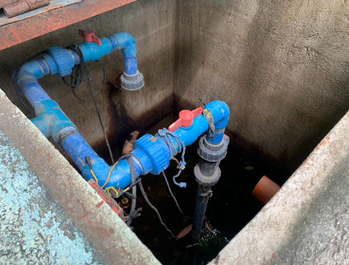
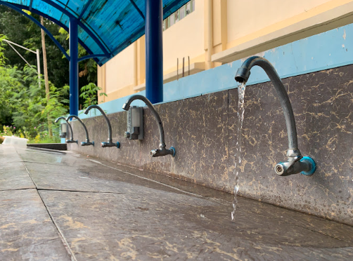
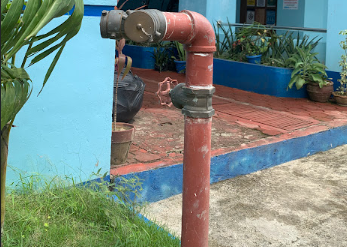
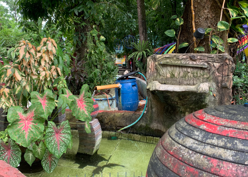

| Water Management Programs | |
|---|---|
| SDG Impact Overview & Wastewater Reuse | Rainwater Storage & Restroom Connections |
|
 Institutional visual outline of water management programs supporting the SDGs
|
 Recycling pipeline connections routed for campus-wide landscaping reuse
|
|
 Dedicated bulk rainwater harvesting and collection storage installations
|
 Plumbing feeds utilizing alternative harvested rainwater loops
|
Urdaneta City University (UCU) has implemented a comprehensive suite of water management programs that significantly contribute to the achievement of the 17 Sustainable Development Goals (SDGs), while aligning with the Water, Infrastructure, and Education indicators of the UI GreenMetric World University Rankings. These initiatives demonstrate the university’s strong institutional commitment to water conservation, sustainable resource management, and climate resilience through integrated, data-driven, and community-centered approaches.
A key component of UCU’s strategy is the installation of rainwater harvesting systems across academic and administrative buildings. These systems efficiently collect and store rainwater, which is then reused for non-potable applications such as toilet flushing, landscape irrigation, and facility cleaning. This reduces reliance on potable water sources and promotes sustainable water use, directly supporting water efficiency targets under GreenMetric.
Complementing this is the expansion of treated water reuse systems, which enable the safe and efficient reuse of wastewater and other treated sources for non-drinking purposes. By integrating these systems into daily campus operations, UCU minimizes water wastage and advances circular water management practices, a key principle in sustainable campus design.
To further enhance water efficiency, the university has adopted water-efficient fixtures across all facilities, including low-flow faucets, dual-flush toilets, and water-saving urinals. These technologies significantly reduce water consumption per use, contributing to measurable reductions in overall campus water demand—an important performance indicator in the UI GreenMetric framework.
UCU also utilizes ICT-based monitoring systems to strengthen water management. Digital water meters and data analytics dashboards are employed to track water consumption in real time, identify inefficiencies, and detect leaks promptly. This data-driven approach supports informed decision-making, improves operational efficiency, and ensures transparency in water usage monitoring.
In addition, the university promotes sustainable landscaping practices by incorporating native and drought-tolerant plant species into campus green spaces. These plants require minimal irrigation, thereby reducing water demand while enhancing biodiversity and ecosystem resilience. This approach aligns with GreenMetric’s emphasis on sustainable land use and environmental conservation.
Education and awareness are integral to UCU’s water sustainability initiatives. The university conducts regular awareness campaigns, training sessions, and capacity-building workshops for students, faculty, and staff. These programs emphasize responsible water use, conservation practices, and the importance of sustainable resource management, fostering a culture of environmental stewardship within the university community.
Furthermore, UCU integrates water-sensitive design principles into new infrastructure and campus development projects. These include efficient drainage systems, sustainable water flow management, and infrastructure that supports water reuse and conservation. Such designs ensure that sustainability is embedded from the planning and construction stages, aligning with long-term environmental goals.
The university also actively promotes research and innovation in water sustainability through units such as EMAS, CITE, and CEA. These groups lead projects focused on water conservation technologies, ICT-enabled monitoring systems, and policy development. Their work contributes to evidence-based solutions and strengthens the university’s role as a center for sustainability research and innovation.
Collaboration is another key strength of UCU’s water management approach. The university partners with local government units (LGUs), non-government organizations (NGOs), and academic institutions to share best practices, access technical expertise, and implement joint sustainability initiatives. These partnerships enhance the scope and impact of UCU’s programs, in line with GreenMetric’s emphasis on collaboration and external engagement.
Ensuring access to clean water and promoting a healthy campus environment through robust monitoring and treatment processes.
Supporting sustainable learning environments and fostering water conservation habits through educational seminars and workshops.
Ensuring efficient water use, wastewater treatment, and sustainable campus sanitation systems via closed-loop collection.
Advancing innovative ICT-based water management systems including digital flow meters and leak-detecting dashboards.
Promoting a resilient and resource-efficient campus by mitigating surface runoff and flooding risk through harvesting loops.
Encouraging efficient, mindful water consumption through low-flow fixtures and strategic behavioral reminders.
Strengthening adaptive strategies and campus water resilience in response to severe weather patterns and climate stress.
Preventing water pollution and protecting local waterways and ecosystems by implementing strict toxic chemical control.
Supporting biodiversity and ecological health through native, drought-tolerant landscaping and rainwater irrigation.
Strengthening collaborations with LGUs, NGOs, and environmental organizations to share research and technical innovations.